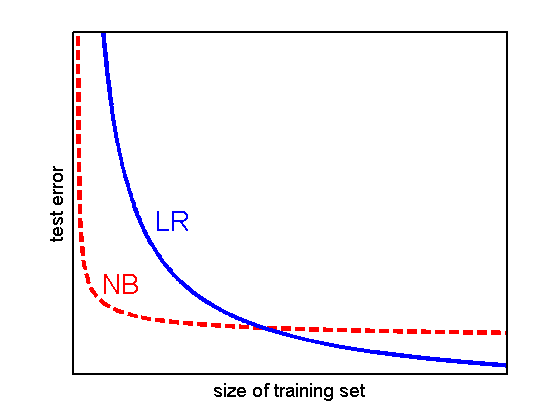

domain = 0:0.01:10;
NB = @(x)x.^(-0.5);
LR = @(x)(8./(x.^0.8))-2;
linewidth = {'LineWidth',3};
hold all;
set(gca,'XTick',[],'YTick',[],'FontSize',16);
axis([-0.1,10,-1,10]);
plot(domain,NB(domain),'--r',linewidth{:});
plot(domain,LR(domain),'-b',linewidth{:});
set(gca,'FontSize',14,'LineWidth',2);
xlabel('size of training set');
ylabel('test error');
box on;
annotation(gcf,'textbox',[0.1702 0.25 0.06392 0.1205],...
'String',{'NB'},...
'FontSize',20,...
'FitBoxToText','off',...
'LineStyle','none',...
'Color','r');
annotation(gcf,'textbox',[0.2648 0.4 0.06392 0.1205],...
'String',{'LR'},...
'FontSize',20,...
'FitBoxToText','off',...
'LineStyle','none',...
'Color','b');
